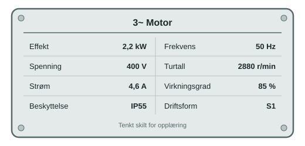

Elektromotorer i anlegget
Nesten alle pumper, vifter, omrørere og transportbånd i et prosessanlegg drives av en elmotor. Her lærer du hvordan motoren virker i grove trekk, hvordan du leser typeskiltet, og hva som beskytter og styrer motoren.
Slik virker en elmotor
En elmotor gjør elektrisk energi om til bevegelse. Inne i motoren går strømmen gjennom spoler av kobbertråd. Strøm gjennom en spole lager et magnetfelt. Med trefase blir magnetfeltet hele tiden flyttet videre fra spole til spole, slik at det går rundt i motoren. Den delen som roterer, kalles rotoren. Rotoren blir dratt med av magnetfeltet, og akselen driver pumpen eller vifta.
Det meste av energien blir til rotasjon, men litt blir til varme i motoren. Derfor har motorer kjøleribber og ofte en vifte bak på akselen. Hvorfor motorene bruker trefase, står på siden Likestrøm, vekselstrøm og trefase.
Typeskiltet
Alle motorer har et typeskilt med de viktigste opplysningene. Det er det første du ser på når du skal vite hva motoren tåler.

| Felt på skiltet | Hva det betyr |
|---|---|
| 3~ | Trefasemotor. |
| effekt (kW) | Effekten motoren kan levere på akselen når den går med full last. |
| spenning (V) | Spenningen motoren skal ha. |
| strøm (A) | Merkestrømmen: strømmen motoren trekker i hver faseleder ved full last. |
| frekvens (Hz) | Frekvensen i strømnettet, 50 Hz i Norge. |
| turtall (r/min) | Hvor mange omdreininger akselen gjør per minutt ved full last. «r/min» er det samme som omdreininger per minutt, ofte skrevet o/min eller rpm. |
| virkningsgrad (%) | Hvor stor del av den elektriske energien som blir til nyttig bevegelse. Resten blir varme. |
| IP55 | IP-grad: hvor godt motoren er beskyttet. Første siffer gjelder støv og fremmedlegemer, andre siffer gjelder vann. IP55 er beskyttet mot støv og tåler vannstråler fra alle kanter, for eksempel fra en slange, men ikke høytrykksspyling. |
| S1 | Motoren kan gå hele tiden med full last. |
Oppgave: På siden om trefase lærte du at en motor på 400 V trekker omtrent 2 A per kW. Sjekk regelen mot typeskiltet over.
Løsning:
- Tommelfingerregelen: \( 2{,}2 \text{ kW} \cdot 2 \text{ A/kW} \approx 4{,}4 \text{ A} \)
- Skiltet: 4,6 A.
Svar: Regelen gir et godt overslag, men skiltet viser den riktige verdien. Den bruker du hvis du skal sjekke om motoren går normalt.
Turtallet på skiltet er litt lavere enn 3000 r/min. I denne motoren går magnetfeltet rundt 3000 ganger i minuttet ved 50 Hz, men rotoren henger alltid litt etter magnetfeltet når den har last. Andre motorer er laget for ca. 1500 eller ca. 1000 r/min.
Startstrømmen
Når en motor startes direkte på nettet, trekker den mye mer strøm enn vanlig i noen sekunder, til den har fått opp farten. Denne startstrømmen er ofte 5–8 ganger merkestrømmen.
Oppgave: Pumpe 3 har en motor på 5,5 kW. Den trekker omtrent 11 A når den går. Hvor stor kan startstrømmen bli hvis den startes direkte?
Løsning: \( 5 \cdot 11 \text{ A} = 55 \text{ A} \) og \( 8 \cdot 11 \text{ A} = 88 \text{ A} \)
Svar: Ca. 55–90 A i noen sekunder. Sikringene og motorvernet, som du lærer om lenger ned, må tåle dette uten å løse ut.
Den store startstrømmen gir et rykk i strømnettet og i pumpen. Store motorer startes derfor ofte mykere, med en mykstarter eller en frekvensomformer som øker turtallet gradvis.
Det som styrer og beskytter motoren
| Utstyr | Hva det gjør |
|---|---|
| sikring | Bryter strømmen ved kortslutning, når strømmen blir svært stor på et øyeblikk. I en motorkurs er sikringen valgt så stor at den tåler startstrømmen, og da er det motorvernet som tar overbelastning. Se Elektrisk effekt og energi. |
| motorvern | Bryter strømmen hvis motoren trekker litt for mye strøm over lengre tid, for eksempel fordi pumpen går tungt. Da beskytter det motoren mot å bli overopphetet. |
| kontaktor | En stor elektrisk bryter som slår motoren av og på når den får signal fra styresystemet. Se Av/på-styring i Automasjon. |
| frekvensomformer | Elektronisk utstyr som endrer frekvensen på strømmen til en motor, og dermed turtallet. Da kan pumpen styres uten å strupe med en ventil, og det sparer energi. Se Rør, ventiler og pumper. |
| arbeidsbryter | En bryter ved motoren som brukes til å koble den fra og låse den før vedlikehold. |
Går ikke pumpen selv om styresystemet sender startsignal, kan feilen sitte i en av disse delene. Det lærer du mer om på siden PLS i Automasjon.
Tegn på at noe er galt
Som operatør er du ofte den første som merker at noe er galt med en motor. Følg med på dette:
- Motoren er mye varmere enn den pleier.
- Den låter annerledes, for eksempel hyler, skraper eller brummer.
- Den vibrerer mer enn vanlig.
- Motorstrømmen er høyere enn vanlig, eller nær merkestrømmen, uten at pumpen gjør mer arbeid.
- Motorvernet løser ut flere ganger.
Meld fra etter rutinene. Vedlikehold av utstyr lærer du mer om i temaet Drift og vedlikehold.
En motor som står stille, kan starte når som helst hvis styresystemet gir signal. Før du arbeider på en pumpe eller en annen maskin, skal motoren kobles fra og låses med arbeidsbryteren, og utstyret skal merkes etter prosedyren. Se Lås og merk i HMS. Kontroller at motoren ikke kan startes før du begynner. Motorer kan også være så varme at du kan brenne deg. Etter norske regler skal arbeid på elektriske anlegg gjøres av elektrofagfolk i en registrert elvirksomhet. Les mer på siden Elektrisk sikkerhet.
Test deg selv
Hva gjør en elmotor?
- Den gjør bevegelse om til elektrisk energi.
- Den gjør elektrisk energi om til bevegelse.
- Den gjør vekselstrøm om til likestrøm.
Motoren gjør elektrisk energi om til rotasjon av akselen. Litt av energien blir til varme.
Typeskiltet viser 4,6 A. Hva betyr det?
- Strømmen motoren trekker når den starter.
- Strømmen motoren trekker i hver faseleder ved full last.
- Den største strømmen sikringen tåler.
Dette er merkestrømmen. Startstrømmen er mye større, ofte 5–8 ganger merkestrømmen.
En motor har en merkestrøm på 15 A og startes direkte. Omtrent hvor stor kan startstrømmen bli?
- ca. 15 A
- ca. 30 A
- ca. 75–120 A
Startstrømmen er ofte 5–8 ganger merkestrømmen: 5 · 15 A = 75 A og 8 · 15 A = 120 A.
Hva er forskjellen på sikringen og motorvernet i en motorkurs?
- Sikringen bryter ved kortslutning, motorvernet ved litt for stor strøm over lengre tid.
- Sikringen slår motoren av og på, motorvernet endrer turtallet.
- Det er to navn på det samme.
Sikringen i en motorkurs er så stor at den tåler startstrømmen, og bryter raskt når strømmen blir svært stor. Motorvernet beskytter motoren mot overoppheting når den går tungt over tid.
Hva må du gjøre før du arbeider på en pumpe?
- Stoppe pumpen på skjermen i kontrollrommet.
- Koble fra og låse motoren med arbeidsbryteren, og merke utstyret etter prosedyren.
- Vente til motoren er kald.
Stopp på skjermen er ikke nok, for motoren kan starte igjen. Den skal kobles fra, låses og merkes etter prosedyren.
Ordliste
| Begrep | Forklaring | Engelsk |
|---|---|---|
| elmotor | En maskin som gjør elektrisk energi om til rotasjon, for eksempel for å drive en pumpe. | electric motor |
| typeskilt | Et skilt på utstyret med de viktigste tekniske opplysningene, som effekt, spenning og strøm. | nameplate |
| merkestrøm | Strømmen en motor trekker ved full last. Den står på typeskiltet. | rated current |
| startstrøm | Den store strømmen en motor trekker i noen sekunder når den starter. Ofte 5–8 ganger merkestrømmen. | starting current |
| motorvern | Et vern som bryter strømmen hvis motoren trekker for mye strøm over lengre tid, slik at den ikke blir overopphetet. | motor protection |
| IP-grad | Et merke som viser hvor godt utstyr er beskyttet mot støv og vann, for eksempel IP55. | IP rating |
| kontaktor | Stor elektrisk bryter som slår en motor av og på når den får signal, for eksempel fra styresystemet. | contactor |
| arbeidsbryter | En bryter ved motoren som kobler den fra strømmen og kan låses, slik at den ikke kan startes under vedlikehold. | safety switch |
| frekvensomformer | Elektronisk utstyr som endrer frekvensen på strømmen til en motor, og dermed turtallet. | variable frequency drive (VFD) |
Les mer
- Rør, ventiler og pumper viser hvordan frekvensomformeren endrer pumpekurven.
- Av/på-styring i Automasjon viser hvordan styresystemet starter og stopper motorer.
Om kildene: Teksten, eksemplene og figuren på denne siden er laget for dette nettstedet. Typeskiltet er tenkt. Effekten på pumpene er hentet fra pumperommet på skolen. Siden bygger på undervisningsopplegg i kjemiprosess- og laboratoriefag ved Sauda vgs, som er utarbeidet med utgangspunkt i blant annet Kjemien stemmer, Laboranten og åpne nettkilder.